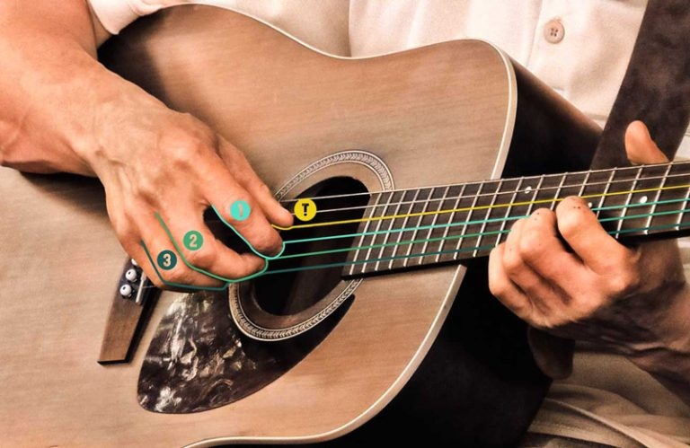

吉他彈法
在中文的吉他世界裡，吉他指法是大家一開始學習的必經之路，所有的教學，所有的社團，都會提到這串咒語般的【口訣】，這個背起來就可以開始彈吉他的【程式碼】，到底該怎麼樣練習？
首先
將手指放在上圖對應的弦上，而 T、1、2、3 分別代表您的大拇指、食指、中指、無名指，輪到哪根手指時，就撥哪根手指所對應的弦。舉例來說，若您的順序是 T123，則您撥弦的順序就是大拇指 T、食指 1、中指 2、無名指 3。
其中，大拇指T是根據和弦的根音來判斷應該要撥哪根弦。
舉例來說：彈奏 C 和弦時，大拇指就要撥第五根弦（ C 和弦的根音在第五弦上）。
彈奏 D 和弦時，大拇指要撥的是第四條弦（第四弦的空弦是根音 D ）。
但以下指法練習重點在於培養右手彈奏的習慣，因此建議先使用第四弦開始訓練，
讓大拇指 T 與其他指 123 必須呈現交叉狀態，讓他不會有打架的姿勢（必須能 T、1 能彈同一根弦）。
一、撥動琴弦發出聲音的完整流程，不是只有【撥】
放慢來看，我們將它分為兩個步驟
1. 觸弦 （Touch）
2. 撥弦釋放（Release）
發出聲音是從手指離開弦的那一瞬間開始的，所以整個撥弦的流程中，
有點類似拉弓射箭，必須先拉弓（觸弦）才能射出箭（釋放）。
吉他指法練習：T123
Step 1 右手拇指 T 以及食指 1 中指 2 無名指 3 「全部摸著弦（Touch）」
Step 2 依照 T、1、2、3 的順序 「撥弦後離開（Release）」
以上動作請放慢速度，並且不用刻意用力，輕輕將右手指尖撥至掌心方向，認識手指接觸琴弦的感覺。
二、【預備】動作的重要性
我們可以先培養一個習慣：
彈奏前一個音時，手指就先觸在弦上（Touch）做好撥弦的預備。這樣子的好處是，你可以做好以下的細部動作
１）左側肉先進去
２）壓弦後才碰到指甲
３）指肉、指甲並用彈出。
所以。這種觸弦方法，稱作「Planting（原意是種植樹木的動作，引申作為準備動作）」， 讓觸弦穩定，不會彈錯音。此外，「觸弦」的動作裡包含先「壓弦」再「撥弦」，利用壓弦的力道給予弦發聲的動力， 可以讓初學者習慣撥弦的感覺，從而慢慢學會控制力道，以獲得穩定而乾淨的音色。